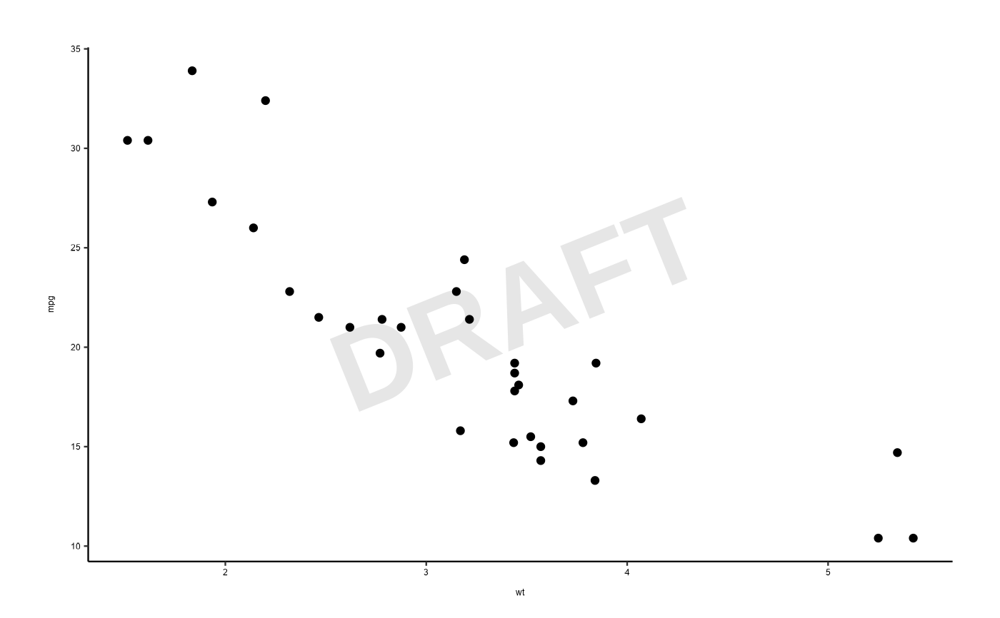

Add a Watermark Annotation Layer to a ggplot2 Object
Usage
watermark(
watermark,
fontsize = 120,
colour = "grey90",
alpha = 0.1,
fontface = "bold",
angle = 22
)Examples
library(ggplot2)
# First, start with a plot:
p <- ggplot(mtcars, aes(x = wt, y = mpg)) + geom_point() + theme_aagi()
# Then add a watermark:
p + watermark("DRAFT")
